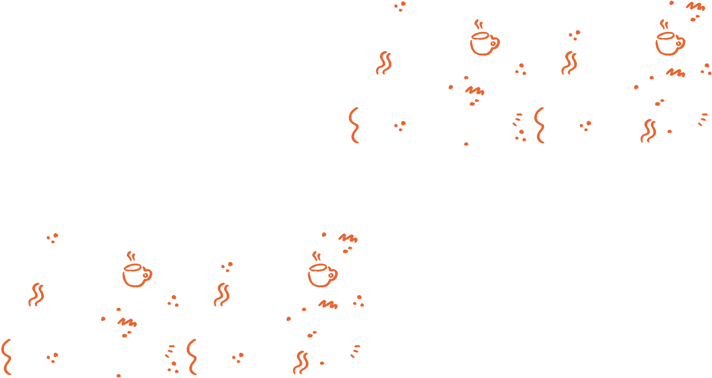
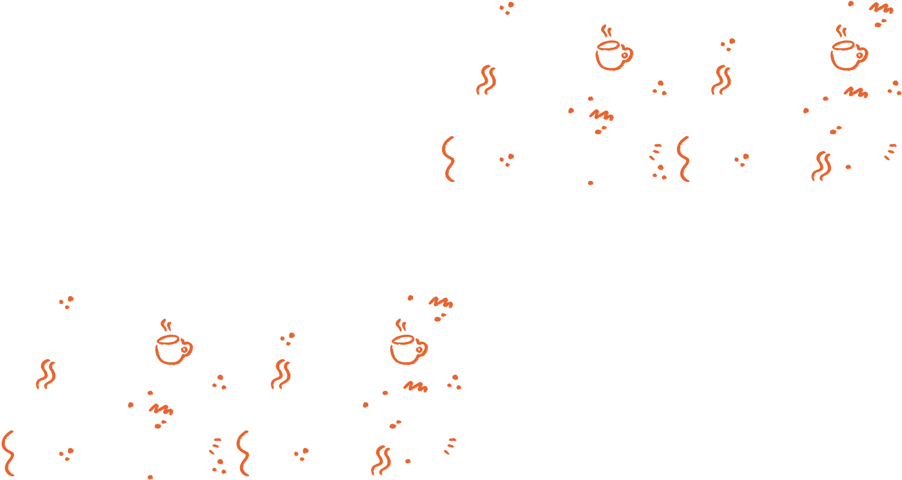

Discover the heart of Huis Talje through our ongoing and past projects. From community initiatives to creative collaborations, each project reflects our commitment to nurturing growth and providing meaningful experiences for our children. See the positive moments and lasting hope we're creating a difference—one project at a time.
 

Every project leaves a story behind. Here, we share the moments, people, and ideas that gave life to our work. From collaborative efforts to creative solutions, these stories reflect the creativity to lasting impact in our communities.
In collaboration with a local design initiative, custom wheelchairs were created for children with mobility challenges. Each design aimed to reflect the child's body, comfort, and personality — some playful, others practical. All unique. The designs themselves remind us that inclusive design can give independence new meaning.
In partnership with local artists, we hosted puppet-making workshops for children with special needs. Each child designed their own puppet — choosing colours, shapes, and textures to bring their ideas to life. The sessions offered a space for creative expression, showing how simple art can brighten a child's day and create memories that last.
Working with a local art collective, we brought vibrant murals to community rooftops and facades. The artwork — inspired by stories, textures, and imagination from children themselves — transformed spaces from dull to playful. The designs were created to create connections, spark curiosity and lift spirits.
In partnership with local musicians, we created a calming and inspiring music experience for children at Huis Talje. Custom-curated playlists and live acoustic performances allowed children to explore sound, rhythm, and expression in a safe rhythm, and melody. The sessions were designed to stimulate the senses and spark imagination, inviting children to explore how music alone can brighten a child's day and create memories of connection, showing how music alone can brighten a child's day and create memories of inspiration.